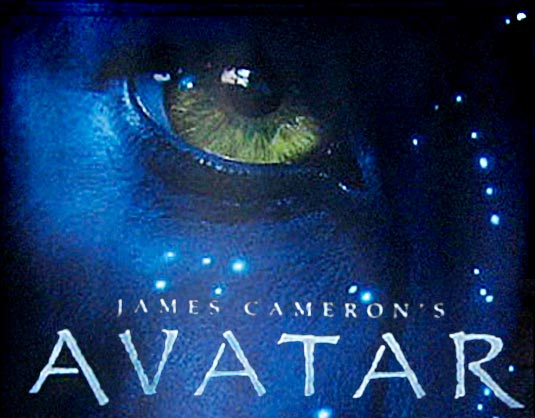

SONG
This was probably the biggest movie that was released during my child hood.
Released in December of 2009 it had the biggest buzz before it came out. Everyone
was talking about how amazing it was going to be because it took 7 years to make
or something like that. I went and saw it in 3D with my dad, and yes it was as
amazing as it was said to be. It was a great movie. Now in 2012 I am just waiting
to see the next two movies scheduled to come in in 2014 and 2015.
